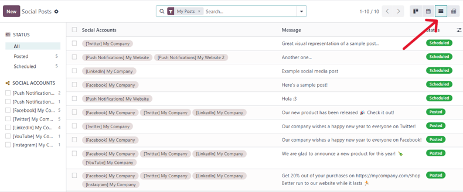

Modelos de conciliación¶
Los modelos de conciliación se usan para automatizar el proceso de conciliación bancaria. Esto es muy útil al trabajar con asientos recurrentes, como tarifas bancarias. Los modelos de conciliación también pueden ser muy útiles al trabajar con descuentos de efectivo.
Cada modelo se crea según un tipo de modelo y las condiciones de transacciones bancarias.
Tipos de modelos de conciliación¶
Los modelos de conciliación están disponibles en . Para cada modelo de conciliación debe configurar un Tipo. Existen tres tipos de modelos:
Botón para generar el asiento de contrapartida: se crea un botón en la sección del asiento de la vista de conciliación bancaria. Si se hace clic en el botín, se generará un asiento de contrapartida que se conciliará con la transacción activa según las reglas en el modelo, las cuales determinan la cuenta, cantidad, etiquetas y distribución analítica del asiento de contrapartida.
Regla para sugerir un asiento de contrapartida: se usa en transacciones recurrentes para conciliarlas a un nuevo asiento según condiciones que deben vincular la información con la transacción.
Regla para conciliar facturas: se usa para conciliar transacciones recurrentes con facturas o pagos según condiciones que deben coincidir con la información en la transacción.
Modelos de conciliación predeterminados¶
En Odoo hay diferentes modelos de conciliación disponibles de forma predeterminada según la localización fiscal de la empresa. Estos modelos se pueden actualizar en caso de que sea necesario, además que los usuarios pueden crear sus propios modelos si hacen clic en Nuevo.
Importante
Si un registro coincide con varios modelos de conciliación, se aplicará el que aparezca primero en la secuencia de modelos. Para ajustar el orden solo debe hacer clic en los tres puntos a un lado de su nombre para arrastrar y soltar el modelo al lugar deseado.
Coincidencia perfecta de facturas¶
Este modelo debería estar al inicio de la secuencia de modelos, ya que permite que Odoo sugiera la conciliación de facturas existentes según condiciones específicas.

Odoo concilia el pago de manera automática cuando selecciona la opción Autovalidar y las condiciones del modelo se cumplen a la perfección. En este caso, el modelo esperará encontrar en la línea del estado bancario la referencia de la factura (ya que se seleccionó Etiqueta) y el nombre del contacto (ya que se seleccionó El contacto está establecido) para sugerir el asiento de contrapartida correcto y conciliar el pago de forma automática.
Conciliación parcial de las facturas si no se han pagado¶
Este modelo sugiere una factura que solo coincide parcialmente con el pago cuando la cantidad recibida es un poco menor que la cantidad de la factura, como puede pasar con los descuentos de efectivo. La diferencia se concilia con la cuenta indicada en la pestaña asientos de contrapartida.
El Tipo de modelo de conciliación es Regla para emparejar facturas y se tiene que configurar Tolerancia de pago.

Nota
La Tolerancia de pago solo se puede aplicar a pagos menores a la cantidad acordada. No se toma en cuenta cuando se paga de más.
Línea con comisiones bancarias¶
Este modelo sugiere un asiento de contrapartida según las reglas configuradas en el modelo. En este caso, el Tipo de modelo de conciliación es Regla para sugerir un asiento de contrapartida y la Etiqueta se puede usar para identificar la información de las Comisiones bancarias en la etiqueta de la transacción.

Nota
Las Regular expressions (expresiones regulares), también conocidas como Regex, se pueden usar en Odoo de muchas formas para buscar, validar y manipular información dentro del sistema. Las Regex pueden ser muy útiles pero también complejas, por lo que es necesario usarlas con sensatez y solo si se entienden bien los patrones con los que se está trabajando.
Para usar regex en sus modelos de conciliación, configure el tipo de transacción como Regex de emparejamiento y agregue su expresión. Odoo recupera de forma automática las transacciones que coinciden con su expresión Regex y las condiciones especificadas en el modelo.

Mapeo de contactos¶
El mapeo de contactos le permite establecer reglas para coincidir transacciones de manera automática a la cuenta del contacto correcta, así se ahorrará tiempo y se reducirán los riesgos de cometer errores al realizar una conciliación manual. Por ejemplo, puede crear una regla de mapeo de contactos para pagos entrantes con números o palabras clave de referencia específicos en la descripción de la transacción. Cuando un pago entrante cumple con estos criterios, Odoo lo vincula a la cuenta del cliente correspondiente.
Para crear una regla de mapeo de contacto, vaya a la pestaña Mapeo de contactos e ingrese guilabel:Buscar texto en etiqueta, Buscar texto en notas y Contacto.